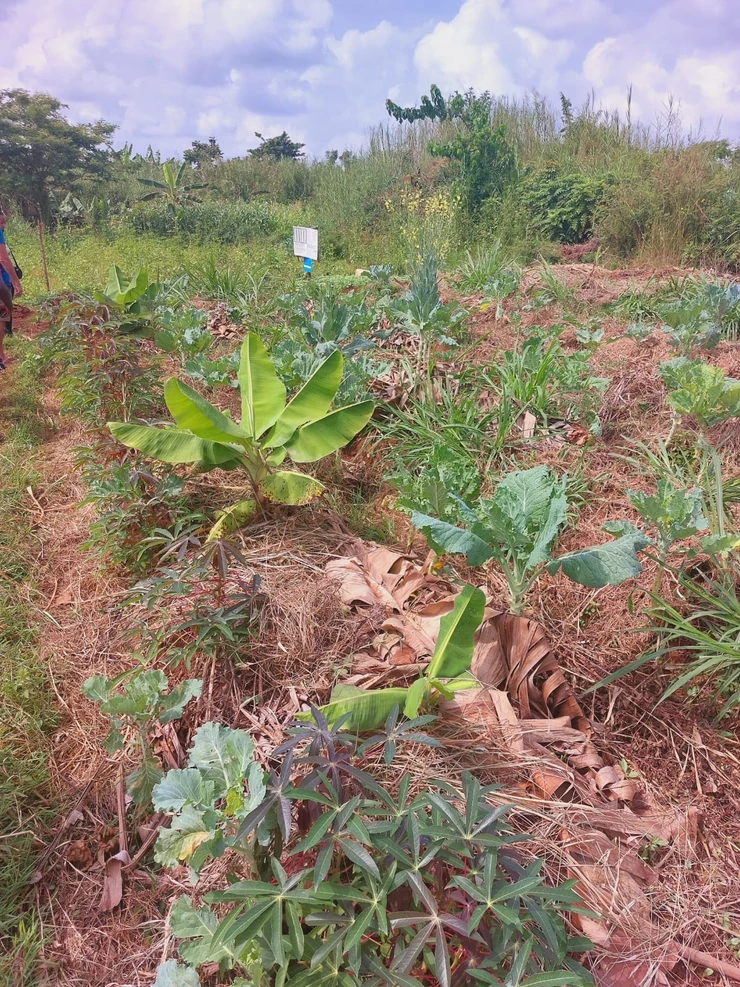

Syntropy in Practice

One knows not what to expect when traveling in Kenya. Our intense traditions and cultures vary as much as our favorite fruits do.
Rolling hills dotted with pebbles that seem they were laid by God himself filled the horizons as we traversed what seemed like the smoothest asphalt roads this traveler has ever been on.
The roadside is accompanied by a beautiful heavy canopy of acacia and jacaranda. My heart feels overwhelmed with happiness for all the shades of trees. Why is it then that Kisumu county has only 2.5% forest cover? My answer came to me a few kilometers later when I saw the acres of mono cropped maize ahead of me. Pioneer signs placed proudly on the living fences struck an ever further blow. Monsanto welcome here.
It is said that the Dholuo enjoy a variety of bitter greens, the western tribes value their diverse mbogas (vegetables). Although I was excited to try these delicacies and carry home some indigenous seeds, I later came to learn that this was not the easy task I had thought it would be.
There are plenty of fish in the sea, and Lake Victoria can compete with this abundance.
As we slowly crossed the lake on the ferry, I carefully watched the fishermen cast their nets into the blue green lake waters and minutes later pull out a furious bounty. How then does one encourage Syntropic agriculture in a place that has everything they could ever need?
When crossing the ferry, it became clear to us that our mission to bring an experimental Agroforestry design to the fishermen of Rusinga Island would be no easy task. It required a demo, a pilot on just one person's shamba (farm) to enlighten them on this revolutionary method.
It was simple, when they saw first hand what a food forest could do for not only their plates, but their pockets, they would leave the fishing to their brothers and move on to more diverse cuisines.
Syntropic Agroforestry as a Self Supporting System
Syntropic Agroforestry is a system that regenerates soil and therefore creates resilient food producing ecosystems. It mimics natural forests where we have different layers according to the plants' need for sunlight. The emergent strata coconuts, okra, papaya and eucalyptus trees, high strata eg mangoes, avocados, moringa, the medium strata bananas and the mulberry and the lower strata eg pineapples and coffee. The beds are covered by mulch representing the leaves that fall and cover the ground in the natural forest. Logs are layer on the paths and mulched to bring mycorrhizal fungi as would fallen trees in the natural forest that decompose.
The plant diversity is created just like in the natural forest where we have fruit trees, biomass, nitrogen fixers, irrigation plants like grass and water storage plants like cactus, aloe vera and sisal and different types of vegetables especially before the trees grow to maturity.
In Syntropic agroforestry no chemicals are used as the soil is built using organic matter and bio. Pests or diseases are seen as agents of the department of optimization of life processes and therefore part of the ecosystem. Their management is achieved by building a stable system in the soil.
The system works as a self supporting system as below:
- Irrigation System - In this system of farming, grass line is very essential. It stores water that supplies water to the rest of the farm during dry seasons.It basically cools down the farm. We prune the grass after two months and use the materials for mulching. When the grass is pruned, the rest of the system gets a signal. The biomass gets to grow faster after which the fruit trees start to grow too. This speeds up the succession of the other crops.
- Catalyst - We have crops like maize and sorghum that when pruned, a signal is sent to the rest of the system to mature faster.
- Agents of optimization of life processes- Pests send signals when the plants are not happy. They only attack the crops when the system is not balanced. The plants scream for help when they lack an element like nitrogen. We should therefore listen to the crops by not killing the pests but by adding the missing elements. This could be by mulching or adding in the nitrogen fixing crops like clover, peanuts, beans and any other crops in the legume family.
- Mother of the farm - Cassava provides shade to other trees like coffee that needs little sunlight since it grows faster.
- Windbreakers - Wood trees growing along the boundaries serve as wind breakers. They ensure less evaporation, improve the humidity of the farm, irrigates the top soil and adds biomass to the soil from the falling leaves.